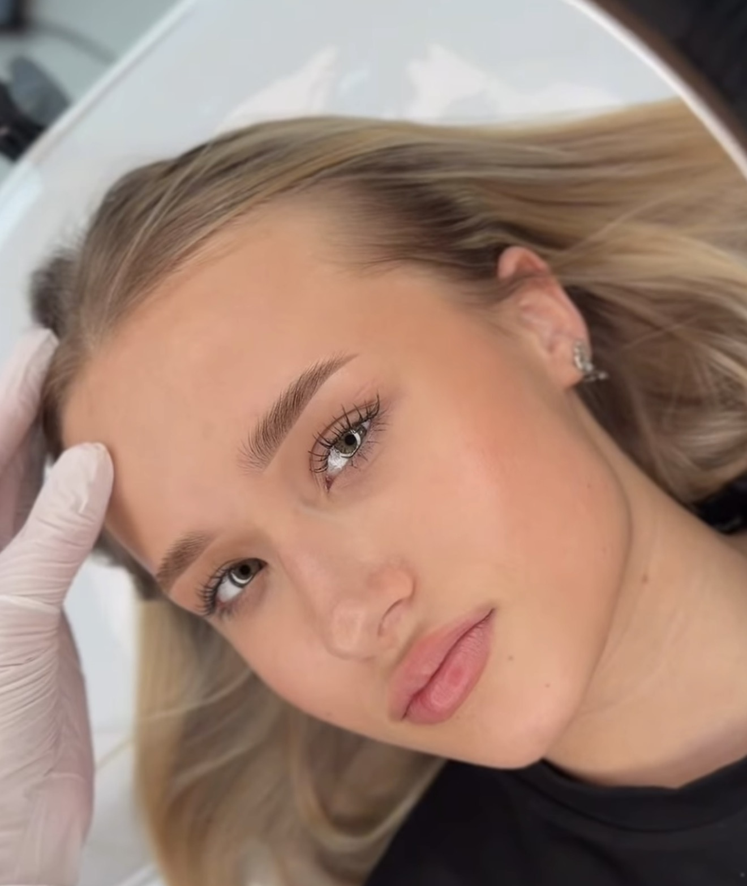
Ombré / Powder Brows
A flawlessly shaded effect — lighter at the front, softly defined at the tail. Long-lasting, natural-looking brows that frame the face without a single harsh line.
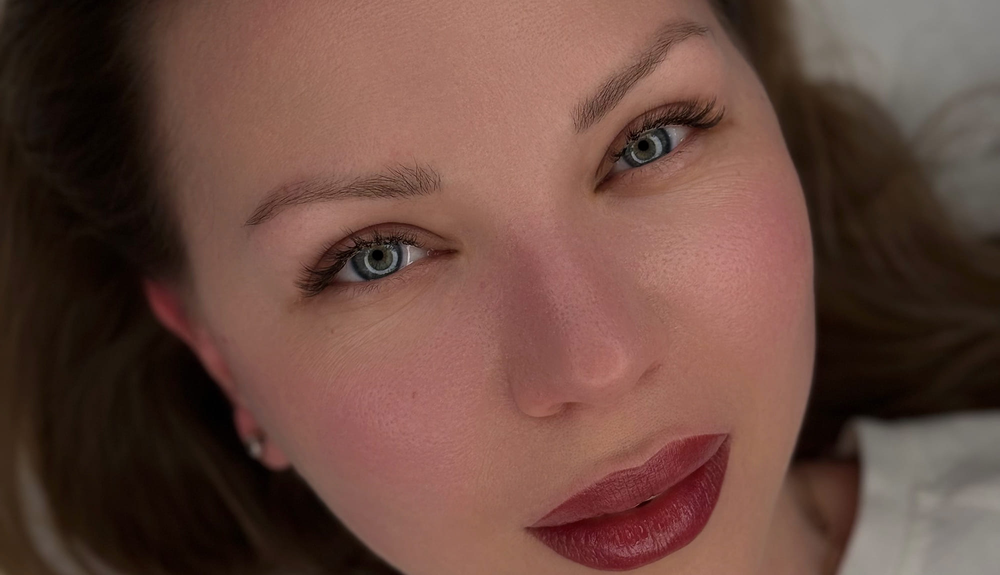
Powder brows, lip blush and Korean lash lift by Naz — a licensed artist trained in Turkey and Russia, working out of a private studio on Pine Street.
5.0 from every client who has reviewed us on GoogleWelcome to Lumière Beauty Atelier — a serene and elegant beauty studio in San Francisco dedicated to enhancing your natural features through soft, timeless results.
Every detail is designed for your comfort and peace, from the calming atmosphere to the personalized approach in every treatment. Whether you are visiting for a subtle enhancement or a complete transformation, you will always leave feeling confident, radiant, and beautifully yourself.

A flawlessly shaded effect — lighter at the front, softly defined at the tail. Long-lasting, natural-looking brows that frame the face without a single harsh line.
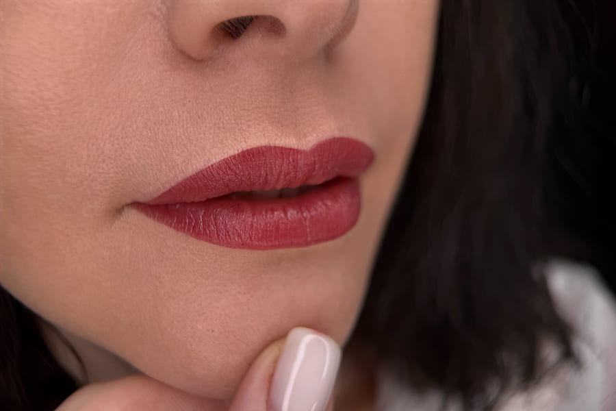
Wake up with naturally tinted, youthful lips. Defines your lip shape, adds vibrance and the look of fuller, healthier lips — while staying entirely natural.

Delicate pigment along the lash line creates the illusion of thicker, fuller lashes — subtle definition for brighter, more captivating eyes.
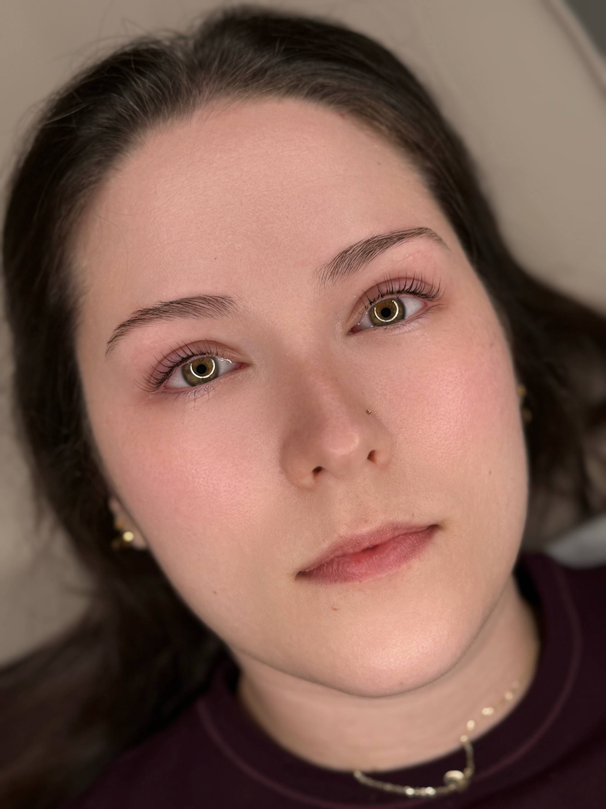
Authentic premium Korean formulas lift your natural lashes into a weightless, elegant curl — nourishing, gentle, and long-lasting.
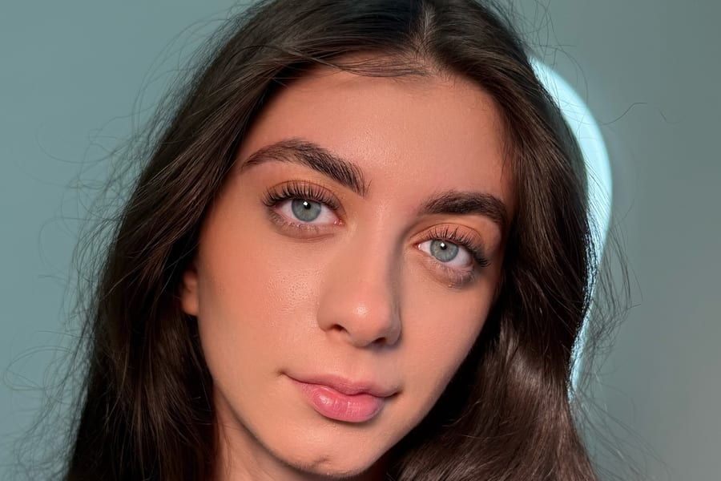
Smooths, lifts and aligns every hair, finished with a luxury keratin mask — silky, hydrated brows with a soft, elegant sheen.
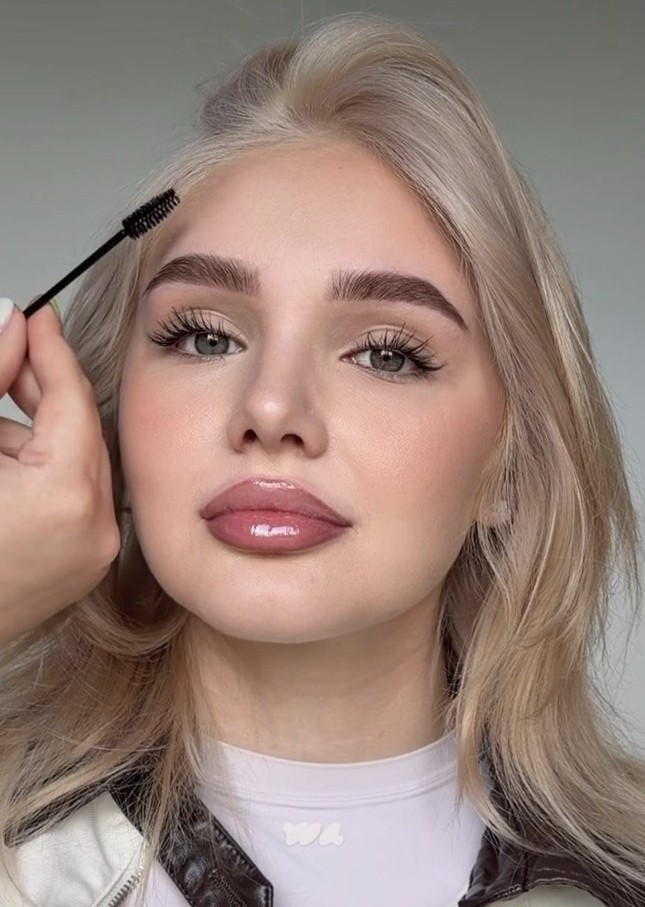
Spa-grade preparation, precise mapping, expert shaping and a custom-blended tint. Polished, balanced, effortlessly natural.
Naz is absolutely amazing and will go above and beyond for you in every way! I went in for a short touch-up, and Naz spent well over the scheduled appointment time just to make sure the result was something I would be happy with, despite it cutting into her evening. She is such a precision artist, and I couldn't be happier with her work — the results look so natural and exactly what I was hoping for.
I had numbing cream on my eyelids before and during, and the needle felt like little pressure to no pain/pressure throughout. After the session, the eyeliner was natural looking and I'm loving it.
The best place in SF to go get your natural looking lash line enhancement! Private & professional space + skilled artist.
The place was clean and comfortable. The master was very kind, gentle, professional. The process was easy and I felt relaxed. My lashes look natural, lifted, and very beautiful.
I've been searching everywhere in San Francisco for a place that offers a real Korean lash lift.
Great experience getting my eyebrows laminated and tinted. Both services took about one hour and came out very nicely.
Licensed and 7× certified Permanent Makeup and Brow Artist, trained in Turkey and Russia — two of the most demanding schools of brow artistry in the world.
Naz founded Lumière to bring that European precision to San Francisco in a modern, natural register: nothing heavy, nothing obvious. She specializes in Powder Brows, Lip Blush, Lash Enhancement, Brow Lamination, Tinting and Korean Lash Lift, working exclusively with premium pigments and products.
We talk through your features, your routine and the result you want — by WhatsApp before you arrive, then again in the chair. Nothing begins until the shape is right.
Your brows or lips are measured and drawn to your bone structure and symmetry. You approve the design before a single stroke of pigment.
Premium pigments, sterile single-use tooling, and a calm, private room. Most clients find the session comfortable enough to fall asleep in.
You leave with an aftercare kit and clear instructions, plus direct access to Naz throughout your healing weeks.
Soft, healed, believable. Follow @lumiere_beautyatelier for fresh work each week.
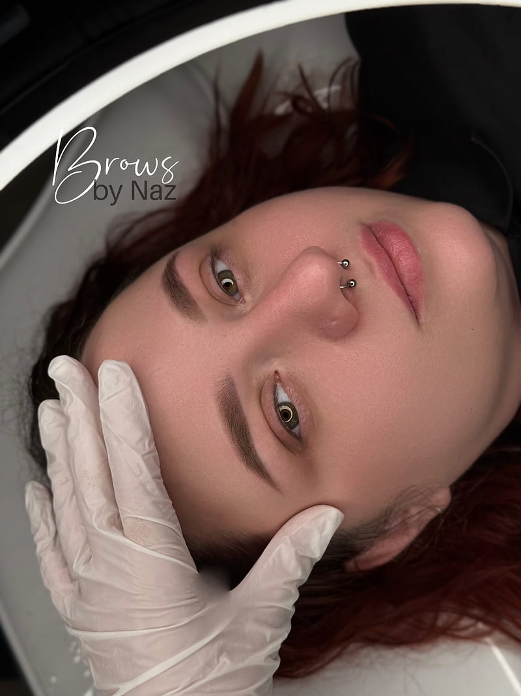
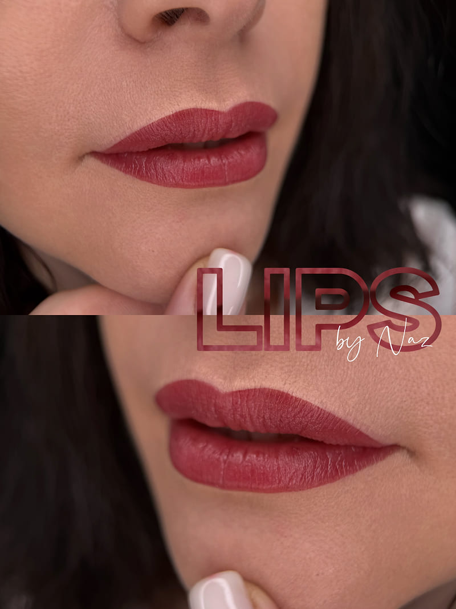
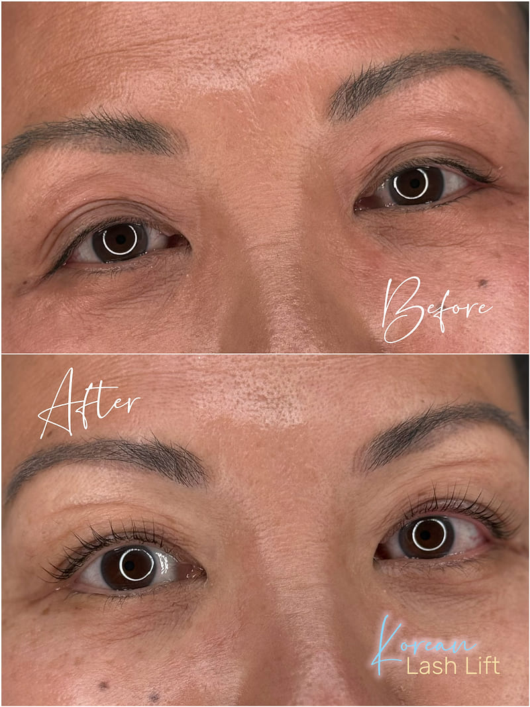
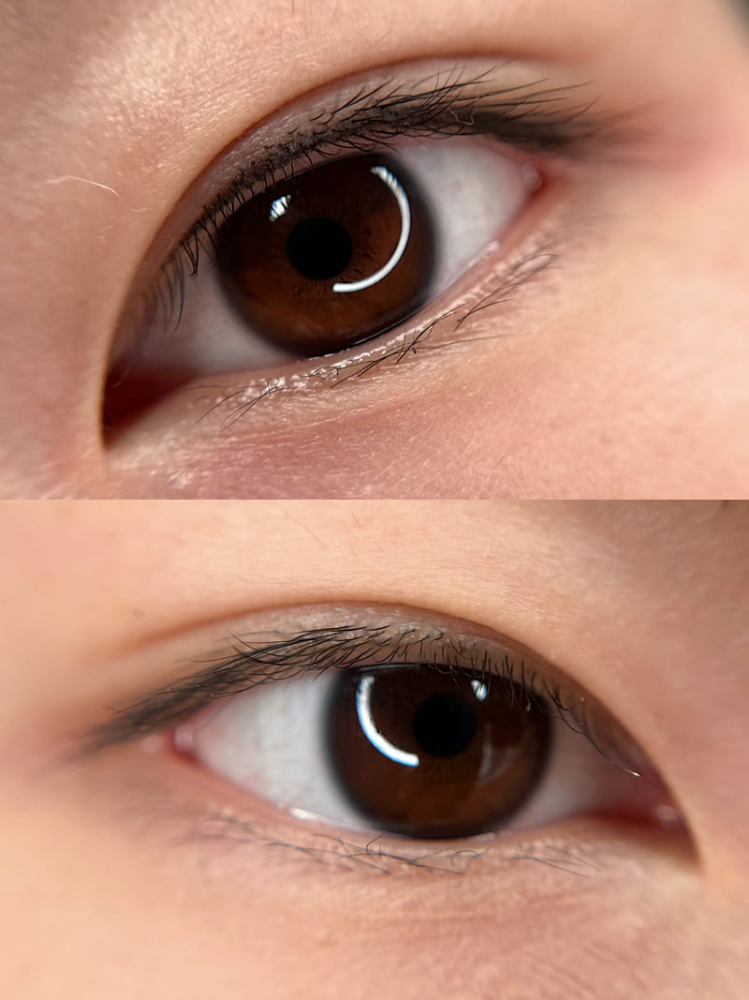
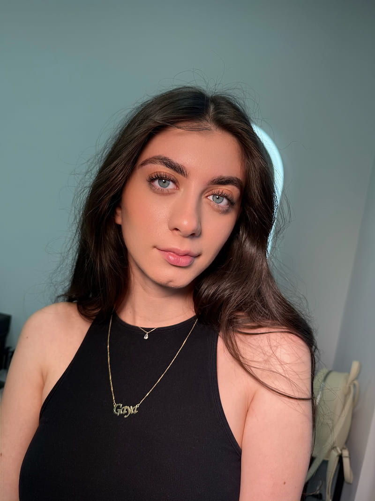
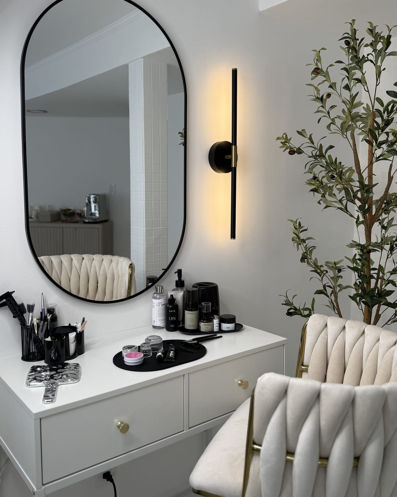
One client at a time. No walk-ins, no waiting room noise, no rushing. The atelier is kept calm and private on purpose — your appointment is the only thing happening while you are here.
1205 Pine Street, Nob Hill — minutes from Union Square and Polk Street, with street parking and Muni close by.
Powder brows, lip blush and lash line enhancement typically last one to three years depending on your skin type, aftercare, sun exposure and lifestyle. A colour refresh keeps the result looking its best.
Most clients describe it as light pressure or scratching rather than pain. Professional topical numbing is used throughout, and comfort is checked continuously.
Sometimes — it depends entirely on how saturated and what colour the existing pigment is. Please send a clear, unfiltered photo to (415) 910-3083 for approval before booking.
No exercise 24 hours prior, no blood thinners (caffeine, alcohol, aspirin, ibuprofen) for 48–72 hours, and no tweezing, waxing, tinting, retinol, peels or tanning for four weeks. Full details on the Care page.
No. Permanent makeup is not suitable during pregnancy or breastfeeding, under 18, or with certain medical conditions. Please read Contraindications & Eligibility before booking.
A non-refundable deposit reserves your time and is applied to your final balance. Rescheduling is welcome with 48 hours' notice. See the Studio Policy.
Booking, deposits and rescheduling are handled securely through Square. Questions first? Message Naz directly on WhatsApp — messaging keeps every detail clear and easy to refer back to.